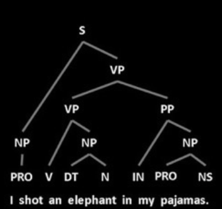
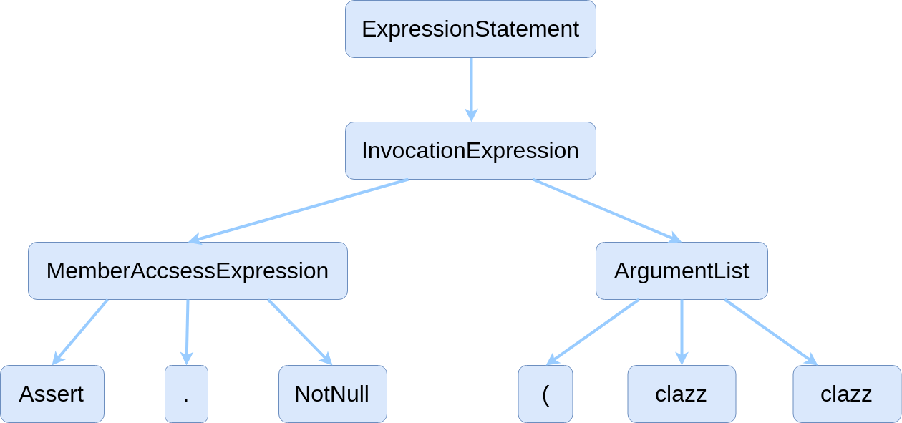

Machine Learning on Code
from n-grams to GGNNs
Waren Long

Nantes ML Meetup - July 1st, 2019
Waren Long, source{d}.
Waren Long
Nantes ML Meetup - July 1st, 2019
"Source code is bimodal: it combines a formal algorithmic channel and a natural language channel of identifiers and comments. Because the two channels interact, [...] bimodality is a natural fit for machine learning."
Earl Barr
fMRI scans of skilled programmers show NLP parts of the brain active when reading code
Decoding the representation of code in the brain
B. Floyd et al. 2017
"Programming languages are inherently harder to write and read... so programmers deliberately write code as unsurprising as possible."
"Code (in all languages) is more predicatble than natural language because it more technical and difficult to learn."
Prem Devanbu at ML4P
On the natualness of Software
A. Hindle et al. 2012
On the natualness of Software
A. Hindle et al. 2012
Modeling Vocabulary for Big Code Machine Learning
R. Robbes et al. 2019
| Natural Language | Code |
|---|---|
| I shot an elephant in my pyjamas |
|
|  |  |
• Token neighbors
• AST-node neighbors
• AST paths
src-d/gemini, source{d}
Public git archive: a big code dataset for all
V. Markovtsev et al. 2018
code2vec: Learning Distributed Representations of Code
Alon et. al. 2018
Assert.NotNull(clazz)
def sum_positive(arr, lim):
sum = 0
for i in range(lim):
if arr[i] > 0:
sum += arr[i]
return sum
~900 nodes/graph
~8k edges/graph
The Graph Neural Network Model
F. Scarselli et. al. 2009
The Graph Neural Network Model
F. Scarselli et. al. 2009